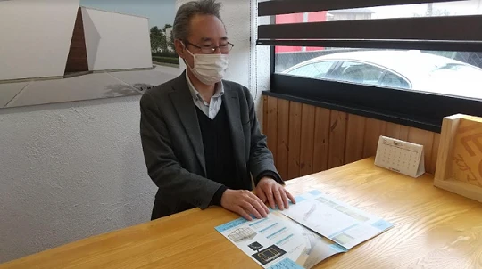
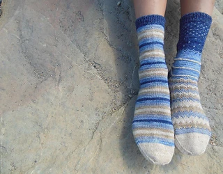

アイノスのモデルハウス、「ママスキー」に掲載中
こんにちは。富山で自然素材にこだわるホンモノの家、フジ創アイノスです。 １月８日～１０日はモデルハウス売却相談会です。 こちらのモデルハウス、ママのための情報サイト「ママスキー」で紹介されています★ https://ma
続きを読む →FUJISOU AINOS JOURNAL
家づくりのこと、暮らしのこと。
日々の想いを、お伝えします。
新しい記事から 17・40ページ
こんにちは。富山で自然素材にこだわるホンモノの家、フジ創アイノスです。 １月８日～１０日はモデルハウス売却相談会です。 こちらのモデルハウス、ママのための情報サイト「ママスキー」で紹介されています★ https://ma
続きを読む →
こんにちは。富山で自然素材にこだわるホンモノの家、フジ創アイノスです。 家づくりはその土地の気候に合わせて行わなければいけません。 富山県は日本で上位の積雪量です。 アイノスこだわりの標準仕様 雪に強い屋根の条件で大事な
続きを読む →
こんにちは。富山で自然素材にこだわるホンモノの家、フジ創アイノスです。 住まいは子どもの成長に大きな影響を与えます。 少し前の家は玄関に入るとすぐに階段があり、2階の子ども部屋に直行できる間取りが主流でした。 近年では、
続きを読む →
こんにちは。富山で自然素材にこだわるホンモノの家、フジ創アイノスです。 今日は空気が冷たいですね。 富山の最低気温は－２℃でした。 室内を暖かくすることは大切ですが、乾燥にも注意が必要です。 エアコンなどの暖房器具によっ
続きを読む →
明けましておめでとうございます。富山で自然素材にこだわるホンモノの家、フジ創アイノスです。 旧年中は格別のお引き立てを賜り、誠にありがとうございました。 今年も皆様の家づくりのお役に立てるよう、社員一同邁進してまいります
続きを読む →
こんにちは。富山で自然素材にこだわるホンモノの家、フジ創アイノスです。 2021年も今日で最後ですね。 今年も弊社をご愛顧いただき誠にありがとうございました。 去年に引き続き、コロナで大変な年ではありましたが、オリンピッ
続きを読む →
こんにちは。富山で自然素材にこだわるホンモノの家、フジ創アイノスです。 今日はひどい雨と雷でした。 冬の雨は体温を奪いますよね。明日からもっと寒くなるようですので、体調管理にお気を付けください。 今回は家の室内温度と健康
続きを読む →
こんにちは。富山で自然素材にこだわるホンモノの家、フジ創アイノスです。 現在建築中のお家に使われている、高性能の断熱材と窓をご紹介します。 断熱材にセルロースファイバー 新聞古紙で作られた断熱材で、その断熱性能はグラスウ
続きを読む →
こんにちは。富山で自然素材にこだわるホンモノの家、フジ創アイノスです。 冬の寒い日は、朝起きるのがつらかったり、寝不足気味になったりしませんか？ 冬は日が短いことがホルモンに影響し、眠りが浅くだらだらと長くなってしまうそ
続きを読む →
こんにちは。富山で自然素材にこだわるホンモノの家、フジ創アイノスです。 富山は本格的に雪が降りだしましたね。 去年のようなひどい大雪にはならなそうですが、お出かけの際は事故にお気を付けください。 室内の事故にも気を付けま
続きを読む →こんにちは。富山で自然素材にこだわるホンモノの家、フジ創アイノスです。 今日はクリスマスイブですね。 日本ではクリスマスは恋人とデートをしたり、友達とパーティーをするイメージですが、海外では家族でミサに行く大切な信仰の日
続きを読む →
こんにちは。富山で自然素材にこだわるホンモノの家、フジ創アイノスです。 寒い冬の時期に気を付けなければいけない事故にヒートショックがあります。 温度の刺激による血圧の急激な変動のことをいいます。 寒い季節にこのヒートショ
続きを読む →
こんにちは。富山で自然素材にこだわるホンモノの家、フジ創アイノスです。 今回はフジ創アイノスの営業担当、田尻さんにインタビューしました。 Q.アイノスで働くことになったきっかけは？ 田尻さん「自然素材の家を作る会社で働き
続きを読む →
こんにちは。富山で自然素材にこだわるホンモノの家、フジ創アイノスです。 暖房で部屋はポカポカのはずなのに、足元がひんやりしたりスースーしたりすることはありませんか？ 家が古くてすきま風が入ってくるなら分かりますが、気密性
続きを読む →こんにちは。富山で自然素材にこだわるホンモノの家、フジ創アイノスです。 今夜から雪が降るようですね。 明日から外出には気をつけてくださいね。 寒い日、暖かい家に帰宅するとメガネがくもることがありますね。 ラーメンやうどん
続きを読む →
こんにちは。富山で自然素材にこだわるホンモノの家、フジ創アイノスです。 家にかかるランニングコストの、スポット的にかかるコストについてお話しします。 ✔スポット的にかかる費用 家を美しく保ち、かつ長持ちさせるためには、定
続きを読む →こんにちは。富山で自然素材にこだわるホンモノの家、フジ創アイノスです。 家づくりの予算を考える時、最初にかかる土地費用や建築費用、庭の費用といったイニシャルコストばかりに目が行きがちですが、同時に今後ずっとかかり続けるラ
続きを読む →
こんにちは。富山で自然素材にこだわるホンモノの家、フジ創アイノスです。 現在高岡市内で、フジ創アイノスのモデルハウス2棟販売中です！ https://www.fujisou-ainos.com/eventinfo/ope
続きを読む →
こんにちは。富山で自然素材にこだわるホンモノの家、フジ創アイノスです。 家の大きさは、単純に建築費用を左右するだけじゃなく、それに付随して様々な費用も左右します。 例えば、建物にかかる固定資産税や都市計画税はもちろん、冷
続きを読む →
こんにちは。富山で自然素材にこだわるホンモノの家、フジ創アイノスです。 以前に比べて、コンクリートなどの建築資材の価格は上がりました。 また、国が指定する耐震や断熱に対する基準が厳しくなったことから、そもそもの建築コスト
続きを読む →こんにちは。富山で自然素材にこだわるホンモノの家、フジ創アイノスです。 家の温度を暖かく保つことが、健康を保つために大切です。 それにはまず家の断熱力を上げること。 日本の「エコ住宅」はそもそも間違っています。 穴の開い
続きを読む →
こんにちは。富山で自然素材にこだわるホンモノの家、フジ創アイノスです。 今日は「クリスマスツリーの日」といって、１８８６年に日本で初めてクリスマスツリーが飾られた日だそうです。 「木の家ってなんだか落ち着く」という感覚は
続きを読む →
こんにちは。富山で自然素材にこだわるホンモノの家、フジ創アイノスです。 子どもたちを悩ませる、アレルギー症状、ぜんそく、アトピー性皮膚炎などの原因の多くは、室内の空気に含まれる化学物質です。 部屋の壁紙がビニールクロスだ
続きを読む →こんにちは。富山で自然素材にこだわるホンモノの家、フジ創アイノスです。 今日は急に雨と風が強くなり寒かったですね。 冷えは万病のもとです。暖かくして過ごしてください。 暖かい家の大切さ 冬になれば床が凍るように冷たくなり
続きを読む →